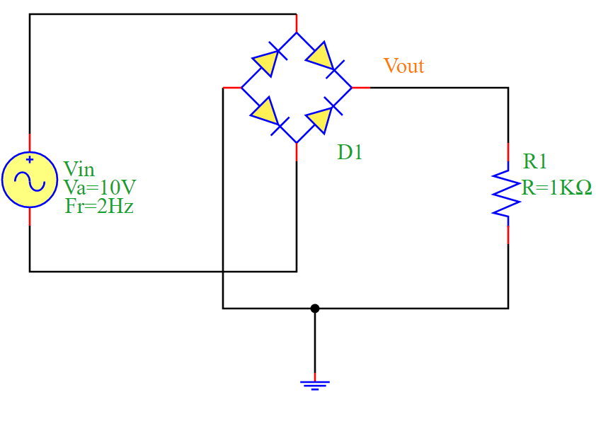
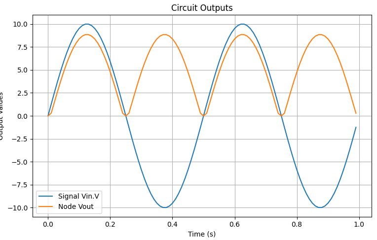

Full-Wave Bridge Rectifier Circuit Simulation
Overview
The Full-Wave Bridge Rectifier is an essential circuit used for AC to DC conversion. It utilizes four diodes arranged in a bridge configuration to rectify both halves of the AC waveform.
When the input Vin is positive, two diodes conduct, allowing current to flow through the load resistor R1.
When Vin is negative, the other two diodes conduct, ensuring the current through R1 always flows in the same direction.
The output voltage Vout is a full-wave rectified signal.
Mathematical Formulation
The output voltage in a half-wave rectifier is given by:
where:
\(V_m\) is the peak voltage of the AC source.
\(\omega\) is the angular frequency of the AC signal (\(\omega = 2\pi f\)).
\(t\) is the time variable.
Circuit Diagram
The following diagram illustrates the Full-Wave Bridge Rectifier circuit:
Simulation Code
The following Python script simulates the full-wave bridge rectifier circuit using PyAMS:
from pyams.lib import circuit
from models import Resistor, SinVoltage, DiodeBridge
# Define Components
R1 = Resistor("Vout", "0")
Vin = SinVoltage("N04", "N03")
D1 = DiodeBridge("N04", "Vout", "N03", "0")
# Set Component Parameters
R1.setParams("R=1KΩ")
Vin.setParams("Fr=2Hz Ph=0.0 Va=10V Voff=0.0")
D1.setParams("Iss=1pA Vt=25mV")
# Create Circuit and Add Elements
circuit = circuit()
circuit.addElements({"R1": R1, "Vin": Vin, "D1": D1})
# Set Outputs for Plotting
circuit.setOutPuts(Vin.V, "Vout")
# Perform Transient Analysis
circuit.analysis(mode="tran", start=0, stop=1, step=0.01)
circuit.run()
circuit.plot()
Simulation Output
The rectified output waveform Vout confirms the expected full-wave rectification behavior. The following plot shows the input AC signal and the rectified output:
Conclusion
The Full-Wave Bridge Rectifier effectively converts AC to DC, making it a fundamental component in power supplies. The simulation results validate its operation by demonstrating a rectified output waveform.